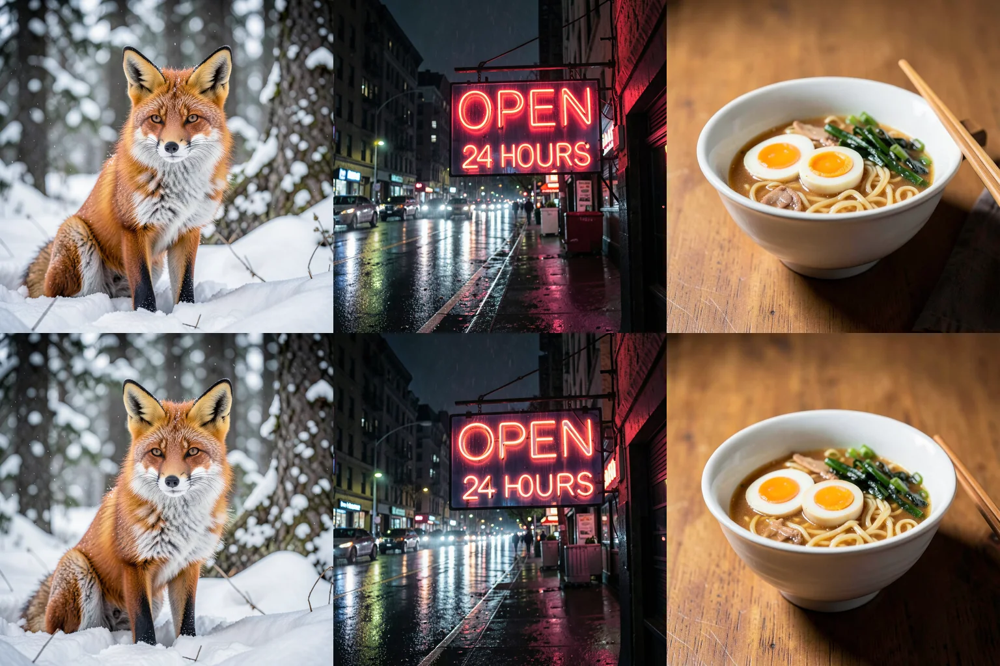
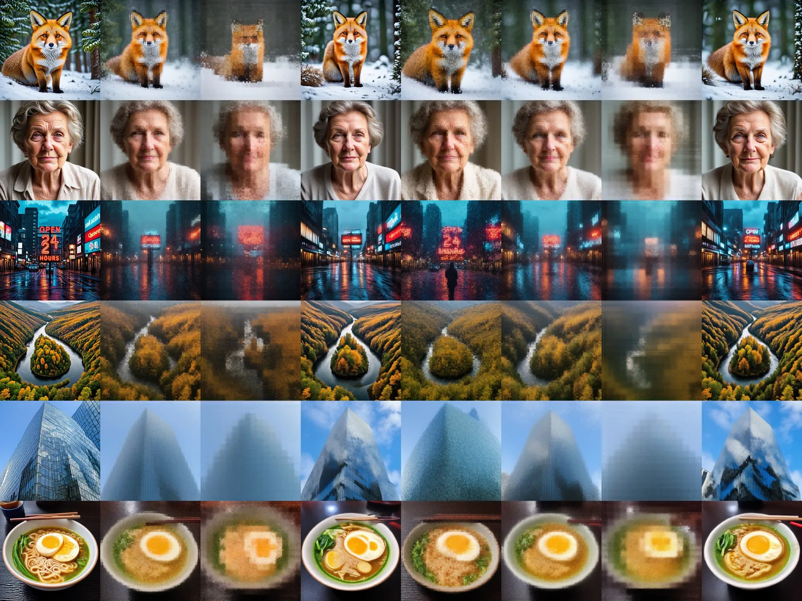
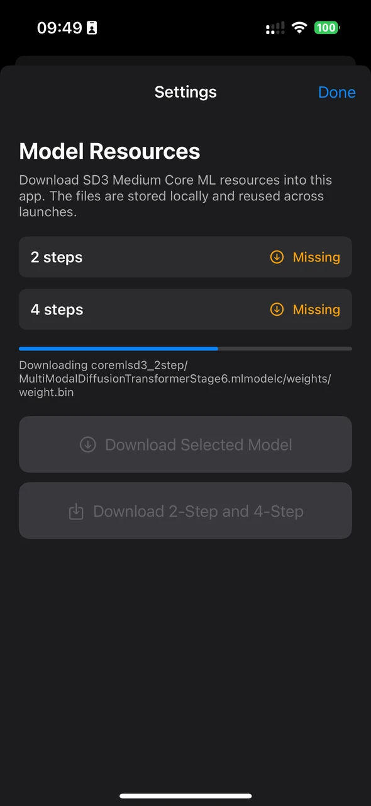

◧
Distilled, no CFG
2-step and 4-step DMD students of SD3 Medium with a flow-matching schedule (shift 3). Guidance is baked in, so every step is a single forward pass.
Free · No sign-up · Open source · iOS · Core ML · Apple Neural Engine
MobileDiffuser runs FLUX.2 Klein and a distilled SD3 Medium on the Neural Engine — text encoder, denoiser and VAE, no server, no GPU fallback. On an iPhone 15 Pro: SD3 Medium at 512 px in 9.4 s and 1024 px in 31 s, FLUX.2 Klein at 1024 px in 77 s, in under 200 MB of app memory.
100% free. No account, no sign-up, no API key — the app and the model downloads are open to everyone, and your prompts never leave the phone.
SD3 Medium · 512 px
4 steps, warm, iPhone 15 Pro
SD3 Medium · 1024 px
4 steps, tiled VAE included
FLUX.2 Klein · 1024 px
4 steps, Qwen3 text encoder included
app memory with FLUX.2 Klein
146 MB for SD3 Medium at 1024
How it works
The ANE compiles static graphs and refuses ones that are too large. MobileDiffuser splits the MMDiT into small Core ML stages, quantizes the weights to INT8, and streams them through the Neural Engine — each stage is loaded, run and released, so the app never holds the whole model.
2-step and 4-step DMD students of SD3 Medium with a flow-matching schedule (shift 3). Guidance is baked in, so every step is a single forward pass.
Conditioning, embeddings and transformer blocks are separate compiled models. Compiled plans are cached by the system, so reloading a stage costs ~25 ms.
.cpuAndNeuralEngine only. A silent CPU fallback is treated as a failure — placement is checked per-op on the phone with MLComputePlan.
Getting to 1024 × 1024
Converting the 512 recipe at a 128 × 128 latent got the app killed on a single block. A small on-device probe showed why: with the stock attention op and 4,250 tokens, the ANE compiler gives up, Core ML quietly moves every op to the CPU, and the plan balloons to ~4 GB.
Queries are split into 16 chunks; each computes softmax(QKᵀ)V against all keys. No approximation — and the block drops to 190 ms, 100% ANE, 64 MB.
Four blocks per stage stalled the on-device compiler for 20+ minutes. One block compiles in ~3 s; the full model is 25 stages, compiled once and cached.
The 512 decoder handles the 128 × 128 latent as 3 × 3 overlapping tiles blended with linear ramps. No seams, no new VAE.
Attention is ~86% of a 1024 block. A Mac reported the stock-SDPA model as fully ANE-placed — placement does not transfer between devices.
FLUX.2 Klein, on device
FLUX.2 Klein reads prompts with Qwen3-4B, a language model as large as the denoiser itself. In MobileDiffuser the text encoder, the transformer and the VAE are 37 Core ML stages that run on the ANE one at a time — the app stays under 200 MB.
The prompt embedding is the hidden states after layers 9, 18 and 27, so only 27 of 36 layers are converted — nine INT8 stages at 23 ms each, 256 tokens instead of 512.
One token carries a 16,000-magnitude activation whose square overflows fp16. The norm divides by the largest value first, and the MLP is rescaled around its last layer; without that the ANE returns inf.
5 double-stream and 20 single-stream blocks (dim 3072) with exact query-chunked attention, then a tiled FLUX.2 VAE. Every op is placed on the ANE.

About 77 s per image and ~185 MB of app memory. The first run also compiles the 37 stages on the phone (about 3 minutes, once). A 512 px variant is converted and verified on a Mac; it has not been timed on the phone yet.
ReSeed, on device
Distilled students map different noise seeds to nearly the same image. ReSeed adds a learned per-channel bias to every transformer block output during the first sampler step only. Because each block is already its own Core ML stage, the bias is added between stages in Swift — same weights, no reload, no measurable cost.
Without ReSeed, four seeds give almost the same frontal portrait.
Biases for blocks 0–22 are added to stage outputs at step 1; the last block’s bias is a small extra input of the final stage. Steps 2–4 are the unchanged student.
α = 0 is the plain 4-step model; α = 0.5 / 1.0 / 1.5 scale the adapter. Switching never reloads the pipeline.
The Core ML chain reproduces the ReSeed effect — a 39% change of the first-step output — within the usual fp16 / INT8 error. 512 px stays at 9.4 s.
Performance
| Model | Resolution | Text | Denoiser | VAE | Total | Peak app memory |
|---|---|---|---|---|---|---|
| SD3-M 2-step | 512 | — | — | — | ~5.6 s | ~86 MB |
| SD3-M 4-step + ReSeed | 512 | 0.7 s | 8.2 s | 0.4 s | ~9.4 s | ~58 MB |
| SD3-M 4-step | 1024 | 0.7 s | 25.2 s | 5.4 s | ~31 s | ~146 MB |
| FLUX.2 Klein 4-step | 1024 | 2.3 s | 69.9 s | 4.7 s | ~77 s | ~185 MB |
iOS 18.5, ANE-first. The first run after install also compiles the stages on device, once (about 45 s for SD3 Medium at 1024, about 3 minutes for FLUX.2 Klein); cached afterwards.
Negative results, kept
Everything below was measured on the phone. Rewriting the same attention maths does not help; removing computation without retraining breaks a 4-step student.
(B,C,1,S) conv layout249 ms · slower
Samples
 ▶
Watch the demo
▶
Watch the demo

Get started
git clone -b MCL https://github.com/TWWinde/MobileDiffuser.git
cd MobileDiffuser
open MobileDiffuser.xcodeproj
# set your signing team, run on a physical iPhone,
# then Settings → download a modeltools/; notes in docs/ANE_1024.md, docs/FLUX2_KLEIN.md, docs/RESEED.mdCite
@misc{tang2025mobilediffuser,
author = {Wenwu Tang and Dong Wang and Olga Saukh},
title = {MobileDiffuser: On-device Stable Diffusion 3 Medium on iPhone with Core ML},
year = {2025},
publisher = {GitHub},
howpublished = {\url{https://github.com/TWWinde/MobileDiffuser}}
}